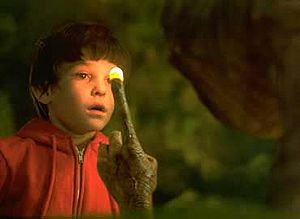

Hobbit
 De: La Frikipedia, la enciclopedia extremadamente seria.
De: La Frikipedia, la enciclopedia extremadamente seria.
| De la serie monstruos mitológicos:
|
| Hobbit
|
|
|
| Nunca metio la canasta...
|
|
| Nombre Científico
|
Homo Pequeñus
|
| Hábitat
|
La Comarca o Paises Bajos
|
| Organización
|
Papal
|
| Actividad
|
Peliculas prOn y fiestas de cumpleaños
|
| Dieta
|
La del caballo
|
| Inteligencia
|
Poca
|
| Aparición
|
Orgías sexuales y banquetes
|
| Número aproximado
|
15000000 y subiendo pues petan como conejos
|
| Armadura
|
Capa de roña
|
| Ataques
|
Chillido pi pi pi.
|
| Moral
|
Baja
|
| Notas
|
Asqueroso olor
|
 Cuando un dedo de Tolquiano a encontrado un anillo, brilla.
La unica subespecie que se llega a la boca.
Son seres de estatura comprendida entre 80 y 120 cm, en caso de ser mas bajito perteneceria a la raza de Leos Mesiss, de pelo rancio y rizado. Su escala social se ve regida por el kie ( o el Papa, en este caso Bilbo Bolsón ) que organiza grandes fiestas en honor al bebercio y a su esclavo sumiso sobrino, el Richal, o como lo conoce la mayoría de la gente: er Frodo. A lo largo de su evolución también han adoptado costubres de otras razas, como la de sus casas, robada de los teletubbies o la de fumar 'yerba de la Comarca'(hongos azul fosforecente) cogida directamente de los gaiteiros. Estos pequeños hombrecillos habitan los Paises Bajos, tambien conocida como la Comarca, donde han llegado a legalizar la "yerba", la prostitucion y la degustación de estiercol ( razon de su mal aliento ).
Un nuevo informe redactado por exploradores wookies afirma que la comunidad hobbit más drogata,fuma-porros y alcoholica de todas se ha desplazado a una recondita superficie llamada La Rioja que no aparece en los mapas,de hecho fuentes frikis afirman que el gobierno estadounidense ha asentado alli su famosa pero ilocalizble pescaderia "Area 51".En los informes wookies tambien queda registrado que dichos hobbits fiesteros se han desplazado a logroño con tonteladas de alcohol,G.I Joes y drogas que han conseguido al cambiar dichas sustancias por su lider carismatico Angel Cristo y su circo zoofilico.
Tipos de Hobbits
- Tolquianos: son mayoria en numero, grandes constructores pues con las uñas de sus pies pueden escabar cuevas donde vivir, tambien son grandes agricultores por que plantan la mejor "yerba" del mundo. Tambien tienen una obsesion insana con los anillos ( que es el diminutivo de ano ) y cuando huelen uno lo persiguen hasta que le menten un dedo ( preferiblemente el anular ). Su deporte favorito son los Dardos, pues ellos hacen de diana.
- Galindos: es el hobbit menos comun, desciende de Marte. Su aspecto se asemeja a un viejo en miniatura con voz de niño pequeño, tiene todo el cuerpo arrugado, menos el pene que lo tiene liso al poder autochuparselo pues no tiene costillas.
- Willows: tambien llamado " de circo ", es el mas normal. De pelaje largo y cremoso, musculatura fuerte y nariz aplastada, les gusta raptar bebes para poder bañarse en la orina que secretan y untarse la cara con sus plastas frescas. Suelen hacerse amigo de Val Kilmer pues comparten aficiones.
- Hangelcristos: de piel morena y pelo corto y rizado, cara de boxeador y antebrazos musculados, el esfinter principal lo tienen muy debilitado pues son muy aficionados a la zoofilia, especialmente con gatos de circo porque dicen que raspan mas. Gozan con la cocaina y el alcohol, y gustan de casarse con bailarinas rubias barbaras.
- Alfsiano: son de aspecto desconocido pues siempre van travestidos con un traje de lo que sea naranja. Alcontrario que los Hangelcristos, a estos les gusta comerse los gatos y atormentar a familias americanas con fantasias de extraterrestres.
- Danidvitos: parecidos a los Italianos pero en miniatura, son mal hablados y sexualmente activos con elefantes o humanos muy grandes ( Chuacheneger ), por eso son idoneos para rodar peliculas como " Porfavor maten a mi mujer, que me gustan los hamsters " o " Los gemelos golpean dos veces ".
Subespecies
Dentro de la familia de los Hobbits existe siempre una depravación de la especie debido a sus tendencias sexuales provocando otras subespecies:
- Messis: fue la primera mutación de Hobbit que llego a ganarse la vida honradamente, aunque no llegan a la altura minima para ser Hobbits. De pelo largo y negro, cara blanca, ojos grandes y nariz gigante, sus habilidades para meterse entre las piernas de seres humanos normales les a abierto un hueco en este mundo. Su tendencia hacia el mal y la oscuridad les obliga a fichar por el F.C. Barceló o en su defecto a afiliarse tambien pueden servir como patas para mesas de plastico o madera.
- Chavochos: suelen vivir en comunidades con muchos mexicanos y un vecino que se llama don Ramon, su cara roja y orejas enormes recuardan a un gremlin prostituta. Es el unico ser de estatura reducida que tiene un ataque sonoro: principalmente es un chillido agudo que suena pi pi pi pi pi.
- Miniyoses: tienen un gran parecido con los Messis, salvo por que tienen todo el cuerpo blanco y no tienen ni un solo pelo, ni siquiera en los cojones. Suelen tener aptitudes para el entretenimiento de adultos y una gran resistencia a los golpes, lo cual los hace ideales como animal de compañia. Les gusta mucho vagar por los bosques de Sarria.
Enfermedades mas comunes en Hobbits
Su vida no suele ser muy larga pues su estatura y su estilo de vida los hace muy proclives a ser pisados o quemados vivos.
- Infecciones anales: al tener los brazos tan cortos no llegan a limpiarse el culo cuando van al servicio, lo unico que pueden hacer es restregarse contra una esquina lo que les provoca descarros e infecciones mortales.
- Aplastamiento: debido a su estatura, no pueden andar por la calle pues suelen ser pisados varias veces en la cabeza y una vez que caen al suelo si pasa una mujer con tacones despidete. Tambien mueren aplastados en sus coches pues no llegan a pisar el pedar del freno.
- Desnutrición: al igual que no llegan a limpiarse el culo, tampoco llegan a ponerse comida en la boca. Si tras mucho pensar no descubren que la unica forma de alimentarse es tirar la comida al suelo suelen morir de inanición. Nota: la sopa y el gazpacho es lo que menos suelen comer.
Enlaces Externos
Autor(es):
- Krusher
- Fordus
- Hari Seldon
- Chrysanthus
- Homer Tunder
- Frikiman
- Aque
- Epikurolibre
- Roms
- Trabuconodosor
Frikipedia 2005-2016, Licencia
GFDL 1.2 - Extraído por FrikiLeaks